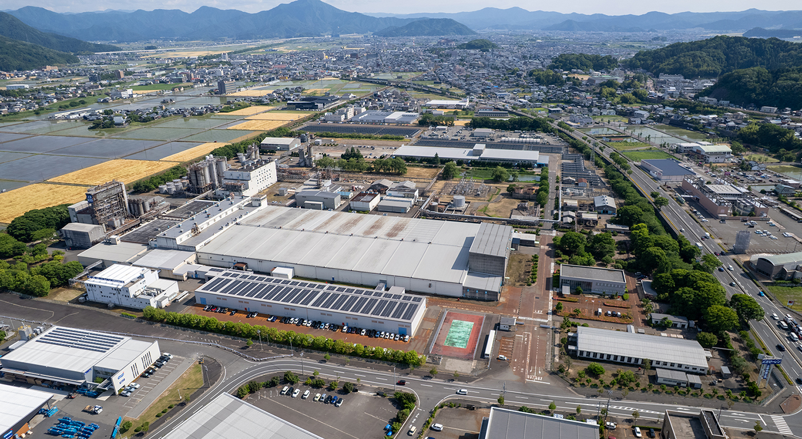
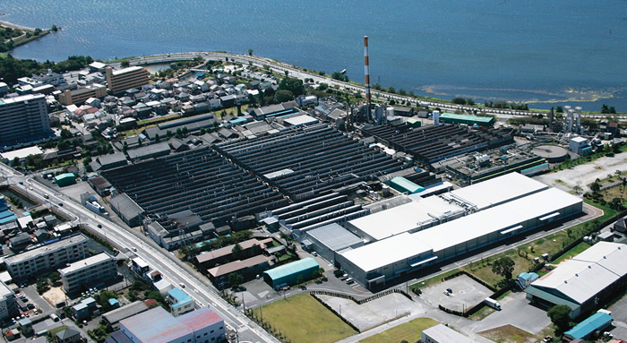

合繊事業の一極集中化「新しいモノづくりのための糸づくり」
総合繊維メーカーとして原糸から最終製品までの一貫生産基盤確立を目指すKBセーレンの生産拠点として重要な役割を果たしているのが、合繊長繊維織物の産地福井県にある“北陸合繊工場”です。
世界に先駆けて開発した“直接連続重合システム”と“高速紡糸技術”を組み合わせることで高品質・高効率な生産システムをいち早く構築。また、高度の複合紡糸技術・混繊技術の融合で“ベリーマX”に代表される独自素材の少ロット・多品種生産を実現してきました。
今後は、「原繊から最終製品までを一貫して提供する」セーレングループの一員として、「新しいモノづくりのための糸づくり」を目標に掲げ、より付加価値の高い素材の開発にも積極的に取り組み、これからも輝き続けることのできる“ドリームファクトリー”を目指します。
工場概要
| 開場 | 1972年（昭和47年）4月 |
|---|---|
| 生産品 | ポリエステル樹脂・ポリエステル長繊維・ナイロン長繊維・ウレタン不織布 |
| 受賞・認定 | 1976年（昭和51年）大河内記念生産賞・直接連続重合技術 1993年（平成5年）大河内記念生産賞特別賞・ベリーマX生産技術 2000年（平成12年）ISO9001認証取得 2001年（平成13年）ISO14001認証取得 |
| 敷地 | 251,429m² |
徹底的に合理化を図った省力・省エネルギー生産ライン
さまざまな先端技術と物流合理化生産ラインを組合せ、環境問題にも配慮した高効率システムを確立しました。なかでも、製糸工程の「玉揚げ→検査→梱包」では完全無人化を実現しています。

構造転換による新たな価値の創出
KBセーレン「長浜工場」は、合繊・マイクロファイバー等の高付加価値加工に加え、北陸合繊工場で生産された差別化原繊との一貫商品開発、更には染色・編みたて・製品化・部品化までの生産を行う「高付加価値化」工場への構造転換を進めています。
新技術・新商品・新市場の開拓の一翼を担うべく、衣料資材から工業資材まで「新たな価値創出」に取り組んでいます。
工場概要
| 開場 | 1930年（昭和5年）11月 |
|---|---|
| 生産品 | 合成繊維・複合素材の染色加工及びマイクロファイバーの加工と製品化事業 |
| 受賞・認定 | 1992年（平成4年）マイクロファイバー加工技術・大河内記念生産賞・グランプリ 1997年（平成9年） ISO9001認証取得 1998年（平成10年）ISO14001認証取得 |
| 敷地 | 137,029 ㎡ |
世界に誇る一貫生産体制
長浜工場敷地内に2006年6月に「ホワイト工場」が完成し、北陸合繊工場で生産された差別化原糸の編みたて・染色加工・最終製品加工・パッケージングに至る一貫生産体制が整い、「品質保証」「安全供給」「クイックデリバリー」「商品開発」など、更なる顧客ニーズへの対応に向け生産体制の強化を図っております。